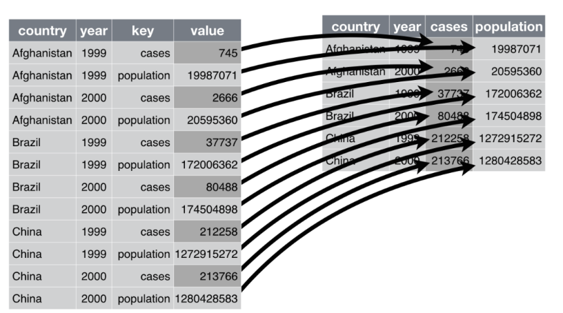
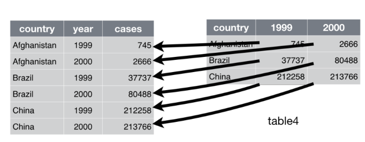

x <- 1:5
x |> sqrt() |> log() |> sum()[1] 2.393746This project was developed to make it simple to manipulate the data. Although one can use Base R to do data manipulation, there are inconsistencies regarding the function names and parameters. Tidyverse package takes the notion of MapReduce to a whole new level.
Loading tidyverse library, loads 9 libraries with it:
tibble – A tibble is a reimagined dataframe. The package aims as enabling you to confront problems earlier, typically leading to cleaner, more expressive code.
readr – The goal of readr is to provide a fast and friendly way to read rectangular data from delimited files.
tidyr – The goal of tidyr is to help you create tidy data.
dplyr – Is a grammar of data manipulation, providing a consistent set of verbs that help you solve the most common data manipulation challenges.
purrr – Enhances R’s functional programming (FP) toolkit by providing a complete and consistent set of tools for working with functions and vectors
stringr – Provides a cohesive set of functions designed to make working with strings as easy as possible.
lubridate – Makes it easier to work with dates
forcats – Aims at providing a suite of tools that solve common problems with factors, including changing the order of levels or the values
ggplot2 – Used for easy plotting. ggplot2 is a system for declaratively creating graphics, based on The Grammar of Graphics.
Pipe in R is an infix operator that was introduced in magrittr package by Stefan Milton Bache, which is used to pass the output of one function as an input to another function which ideally makes our code easily readable and efficient. In other words pipe operator %>% is used to express a sequence of multiple operations in an elegant way.
All the packages in the tidyverse (except ggplot2) were written to be compatible with the pipe operator, denoted by %>%, often pronounced as “and then”. The pipe is meant to help make code easier to read and understand.
The primary way the %>% operator works is to put the object on the lefthand side into the first argument of the function on the righthand side:
f(x) can be written as x %>% f().
f(x,y) can be written as x %>% f(y).
By extension, we can include multiple pipes: x %>% f(y) %>% g(z) is equivalent to g(f(x,y),z).
Side Note: The pipe operator is from the magrittr package, but packages in the tidyverse will load %>% automatically.
Note that as per R version 4.0.0, there is a native pipe in R ie |> and cab be used almost as similar as %>% though there are some differences.
Examples using pipe.
x <- 1:5
x |> sqrt() |> log() |> sum()[1] 2.393746The above can also be done as:
library(tidyverse)
x <- 1:5
x %>% sqrt() %>% log() %>% sum()[1] 2.393746When using multiple pipes in one expression, it is more readable to write the pipes on separate lines:
x %>%
f(y) %>%
g(z)The above piping might not be ideal since the functions are simple and straightforward. Although when dealing with data manipulation, you will notice how the pipe comes in handy.
When using the pipe operator the . can be used as an argument placeholder on the righthand side to represent the object on the lefthand side.
f(x,y) can be written as y %>% f(x, .)
lm(Volume~Height, data = trees) can be written as trees %>% lm(Volume ~ Height, data = .)
The native pipe |> on the other hand uses _ as the argument placeholder, but does not accept argument matching by position. Thus one must pass the argument by name:
f(x,y) can be written as y |> f(x,y = _).
trees |> lm(Volume ~ Height, data = _)
Note:
trees %>% lm(Volume ~ Height, .) works
trees |> lm(Volume ~ Height, _) does not work.
Run the above to determine as to whether they run or not.
It is not compulsory to use pipes, though they can simplify your task. In case you have more than one input at a time, then you can decide not to use pipe. Also, if it simple to directly call the function on the data, there is no need to use a pipe. On the other hand, if the input has to be manipulated in a complex manner before obtaining the output, consider using the pipe. Note also that whenever you are working with tidyverse, you should consider using the magritrr pipe %>% rather than the native pipeas it is already loaded to your searchpath.
Tibbles are data frames with the added class tbl_df that makes the way R prints the object more readable. The tibble() function can create tibbles, the same way that data.frame() does. The as_tibble() function coerces lists and matrices into tibbles.
This is a package used to read data into R. The main functions include
read_csv - Imports Comma Separated Values dataset ie csv files
read_table - Reads text files ie txt files. These are files where values are separated by one or more spaces.
Also in order to clean data, functions such as parse_number will be put into effect.
Some of the datasets to use will be found here.
A dataset is called tidy if the following three rules are satisfied:
Each variable must have its own column.
Each observation must have its own row.
Each value must have its own cell.

Any dataset that is not tidy is sometimes called messy.
The first step in tidying data is to figure out what the variables and observations are.
The main functions in the tidyr package help make data tidy. Once the variables and observations are specified, there are several functions that address common issues with messy data:
pivot_longer - used when one variable is spread across multiple columns and need to be stacked
pivot_wider – used when one observation is scattered across multiple rows and need to be spread across multiple columns instead
separate – used when cells contain multiple values (from different variables).
unite – used when a single variable is spread across multiple columns.
All of the tidyr functions have the same basic syntax:
The first argument is a data frame (or tibble).
Subsequent arguments describe what to do with the data frame. (variable names can be used without quotations).
The output is a data frame (same class as the input).
As stated before, this is used to bring together data spread across multiple variables/cells into one variable/cell. For example assume we have a dataset whereby we have a column containing year, another column containing month and another column containing day. These three columns need to be just one column denoted as date.
df <- data.frame(Year = c(2021, 2022, 2023, 2021),
month = c(8,7,8,1),
day = c(23,14, 30, 8))
df Year month day
1 2021 8 23
2 2022 7 14
3 2023 8 30
4 2021 1 8Note that we can unite all the above to just have one column:
unite(df, Date, Year, month, day, sep = '-', remove = FALSE) Date Year month day
1 2021-8-23 2021 8 23
2 2022-7-14 2022 7 14
3 2023-8-30 2023 8 30
4 2021-1-8 2021 1 8df %>%
unite(Date, everything(), sep = '-', remove = FALSE) Date Year month day
1 2021-8-23 2021 8 23
2 2022-7-14 2022 7 14
3 2023-8-30 2023 8 30
4 2021-1-8 2021 1 8Type help("unite") skim through the help page. Run the examples. Then try the following.
Quiz: Load the tidyverse package. Type table5 in the console. You should see a dataframe containing 6 observations and 4 variables. Note that the Year variable has been broken down into two variables. ie Century and year unite these two and create a correct Year variable. You should get what looks like table3
The separate() function pulls apart one column into multiple columns, by splitting wherever a separator character appears. It is the opposite of unite
Quiz: Use separate function to convert table5 to look exactly like table2. Hint ?separate
Note that separate() has been superseded in favour of separate_wider_position() and separate_wider_delim() .
Both separate and unite can be accomplished using the mutate function.
When an observation is scattered across multiple rows, we want to widen the observation from stacked rows into one wider row.
Consider table2:
table2# A tibble: 12 × 4
country year type count
<chr> <dbl> <chr> <dbl>
1 Afghanistan 1999 cases 745
2 Afghanistan 1999 population 19987071
3 Afghanistan 2000 cases 2666
4 Afghanistan 2000 population 20595360
5 Brazil 1999 cases 37737
6 Brazil 1999 population 172006362
7 Brazil 2000 cases 80488
...Consider the case and population for each country per year to be one observation. Then the two should be on one row and not two rows. Look at the image below:

The image depicts the process of reshaping/casting/pivoting the data into a wider format. This wider format will be considered as the tidy data. The longer format provided above is untidy/messy.
pivot_wider() “widens” data, increasing the number of columns and decreasing the number of rows. The inverse transformation is pivot_longer() To transform the data as shown in the image above, the code will be:
table2 %>%
pivot_wider(id_cols = c(country, year), names_from = type, values_from = count)# A tibble: 6 × 4
country year cases population
<chr> <dbl> <dbl> <dbl>
1 Afghanistan 1999 745 19987071
2 Afghanistan 2000 2666 20595360
3 Brazil 1999 37737 172006362
4 Brazil 2000 80488 174504898
5 China 1999 212258 1272915272
6 China 2000 213766 1280428583The id_cols are the columns that need to be maintained, ie not widened/spread
The names_from is the column(s) that contains variable names.
The values_from is the column(s) that contains the values from multiple variables.
Look at the help page to learn more about the various parameters of this function. Run all the examples of that page looking at the different code used to generate the required output.
[6] try
pivot_longer() “lengthens” data, increasing the number of rows and decreasing the number of columns. The inverse transformation is pivot_wider()
consider table4a:
table4a# A tibble: 3 × 3
country `1999` `2000`
<chr> <dbl> <dbl>
1 Afghanistan 745 2666
2 Brazil 37737 80488
3 China 212258 213766
From the above, we can tell that the data in table 4a is messy. This is because we have more than one observation per row. For example in row 1 we have the cases in 1999 and the cases in 2000. Note that the cases per year which should belong in one variable are spread over multiple variables/columns.
table4a %>%
pivot_longer(-country)# A tibble: 6 × 3
country name value
<chr> <chr> <dbl>
1 Afghanistan 1999 745
2 Afghanistan 2000 2666
3 Brazil 1999 37737
4 Brazil 2000 80488
5 China 1999 212258
6 China 2000 213766table4a %>%
pivot_longer(-country, names_to = 'year', values_to = 'cases')# A tibble: 6 × 3
country year cases
<chr> <chr> <dbl>
1 Afghanistan 1999 745
2 Afghanistan 2000 2666
3 Brazil 1999 37737
4 Brazil 2000 80488
5 China 1999 212258
6 China 2000 213766table4a %>%
pivot_longer(c(`1999`, `2000`), names_to = "year", values_to = "cases")# A tibble: 6 × 3
country year cases
<chr> <chr> <dbl>
1 Afghanistan 1999 745
2 Afghanistan 2000 2666
3 Brazil 1999 37737
4 Brazil 2000 80488
5 China 1999 212258
6 China 2000 213766Note that in we had to use back tick quotes since the names are non-standard/non-syntactic.
Read through the help page to better understand the function. Run the examples, especially the last one.
Note: Most of the times, the names have to be captured using some particular pattern. One need to learn about regular expressions in order to easily used the name_pattern parameter.
names_toUsed when multiple variables are spread across multiple columns.
Lets take a look at only one varibale x spread across multiple columns: Check the different codes below:
df1 <- data.frame(x_1 = 1:2, x_2 = 2:3, x_3 = 4:5)
pivot_longer(df1, everything())# A tibble: 6 × 2
name value
<chr> <int>
1 x_1 1
2 x_2 2
3 x_3 4
4 x_1 2
5 x_2 3
6 x_3 5pivot_longer(df1, everything(), names_to = 'group', values_to = 'x')# A tibble: 6 × 2
group x
<chr> <int>
1 x_1 1
2 x_2 2
3 x_3 4
4 x_1 2
5 x_2 3
6 x_3 5pivot_longer(df1, everything(),
names_to = c('var', 'group'), names_sep = '_')# A tibble: 6 × 3
var group value
<chr> <chr> <int>
1 x 1 1
2 x 2 2
3 x 3 4
4 x 1 2
5 x 2 3
6 x 3 5pivot_longer(df1, everything(),
names_to = c('.value', 'group'), names_sep = '_')# A tibble: 6 × 2
group x
<chr> <int>
1 1 1
2 2 2
3 3 4
4 1 2
5 2 3
6 3 5Notice how when we used the .value within the names_to parameter, the value column was named according to the word that occupied the position prior to the separator in the names of the selected variables.
What if instead of having just one variable, we had 2, ie x and y? The only way to obtain the needed results is by using .value as an the argument of names_to parameter.
df2 <- cbind(df1, y_1 = 11:12, y_2 = 12:13, y_3 = 14:15)pivot_longer(df2, everything(),
names_to = c(".value", "group"), names_sep = "_")# A tibble: 6 × 3
group x y
<chr> <int> <int>
1 1 1 11
2 2 2 12
3 3 4 14
4 1 2 12
5 2 3 13
6 3 5 15Quiz: clean the names of anscombe dataset by running anscombe %>%janitor::clean_names(numerals = 'right'). Using the dataset with cleaned names, pivot the data to obtain only two columns ie columns x and y.
[6] Use the data frame shown below
df <- structure(list(wind = c(0.84, 1.77, 3.5, 6.44, 7.55), ROS = c(0.01,
0.03, 0.05, 0.07, 0.1), T0_1 = c(1110, 350, 250, 300, 311), T0_2 = c(560,
200, 364, 258, 159), T0_3 = c(258, 147, 369, 123, 624), T180_1 = c(554,
226, 547, 842, 366), T180_2 = c(258, 147, 369, 123, 624), T180_3 = c(110,
350, 250, 300, 311)), class = "data.frame", row.names = c(NA,
-5L))Other useful tidyr functions include fill unnest, unpack, and unchop . Learn more about fill
There are five main functions in the dplyr package that are useful for data manipulation. The data is assumed to be tidy.
select() picks variables based on their names.
filter() picks cases based on their values.
arrange() changes the ordering of the rows.
mutate() adds new variable that are functions of existing variables
summarise() reduces multiple values down to a single summary.
selectIn data manipulation, we often desire to work on a subset of the variables in the whole dataset. The select function is used to only pick the variables of interest to work on.
Tidyverse selections implement a dialect of R where operators make it easy to select variables:
: for selecting a range of consecutive variables.
! for taking the complement of a set of variables.
& and | for selecting the intersection or the union of two sets of variables.
c() for combining selections.
library(tidyverse)
starwars# A tibble: 87 × 14
name height mass hair_color skin_color eye_color birth_year sex gender
<chr> <int> <dbl> <chr> <chr> <chr> <dbl> <chr> <chr>
1 Luke Sk… 172 77 blond fair blue 19 male mascu…
2 C-3PO 167 75 <NA> gold yellow 112 none mascu…
3 R2-D2 96 32 <NA> white, bl… red 33 none mascu…
4 Darth V… 202 136 none white yellow 41.9 male mascu…
5 Leia Or… 150 49 brown light brown 19 fema… femin…
6 Owen La… 178 120 brown, gr… light blue 52 male mascu…
7 Beru Wh… 165 75 brown light blue 47 fema… femin…
...select name, height and mass from the starwars dataset.
starwars %>%
select(name, height, mass) # A tibble: 87 × 3
name height mass
<chr> <int> <dbl>
1 Luke Skywalker 172 77
2 C-3PO 167 75
3 R2-D2 96 32
4 Darth Vader 202 136
5 Leia Organa 150 49
6 Owen Lars 178 120
7 Beru Whitesun lars 165 75
...starwars %>%
select(c(name, height, mass))# A tibble: 87 × 3
name height mass
<chr> <int> <dbl>
1 Luke Skywalker 172 77
2 C-3PO 167 75
3 R2-D2 96 32
4 Darth Vader 202 136
5 Leia Organa 150 49
6 Owen Lars 178 120
7 Beru Whitesun lars 165 75
...Note: There is no need to use the quotes eg "name" since we are working on tidyverse. If the names are not syntactically correct, eg contain punctuation marks, starts with numbers etc, you will have to use backticks or quotes to select those names.
select the first 3 variables
starwars %>%
select(1:3)# A tibble: 87 × 3
name height mass
<chr> <int> <dbl>
1 Luke Skywalker 172 77
2 C-3PO 167 75
3 R2-D2 96 32
4 Darth Vader 202 136
5 Leia Organa 150 49
6 Owen Lars 178 120
7 Beru Whitesun lars 165 75
...select everything apart from the sex and gender
starwars %>%
select(-sex, -gender) # you can also do !sex, !gender# A tibble: 87 × 12
name height mass hair_color skin_color eye_color birth_year homeworld
<chr> <int> <dbl> <chr> <chr> <chr> <dbl> <chr>
1 Luke Skywa… 172 77 blond fair blue 19 Tatooine
2 C-3PO 167 75 <NA> gold yellow 112 Tatooine
3 R2-D2 96 32 <NA> white, bl… red 33 Naboo
4 Darth Vader 202 136 none white yellow 41.9 Tatooine
5 Leia Organa 150 49 brown light brown 19 Alderaan
6 Owen Lars 178 120 brown, gr… light blue 52 Tatooine
7 Beru White… 165 75 brown light blue 47 Tatooine
...select from hair_color to sex
starwars %>%
select(hair_color:sex)# A tibble: 87 × 5
hair_color skin_color eye_color birth_year sex
<chr> <chr> <chr> <dbl> <chr>
1 blond fair blue 19 male
2 <NA> gold yellow 112 none
3 <NA> white, blue red 33 none
4 none white yellow 41.9 male
5 brown light brown 19 female
6 brown, grey light blue 52 male
7 brown light blue 47 female
...select everything else apart from hair_color to sex
starwars %>%
select(!(hair_color:sex)) # you could also use -(hair_color:sex)# A tibble: 87 × 9
name height mass gender homeworld species films vehicles starships
<chr> <int> <dbl> <chr> <chr> <chr> <lis> <list> <list>
1 Luke Skywalker 172 77 mascu… Tatooine Human <chr> <chr> <chr [2]>
2 C-3PO 167 75 mascu… Tatooine Droid <chr> <chr> <chr [0]>
3 R2-D2 96 32 mascu… Naboo Droid <chr> <chr> <chr [0]>
4 Darth Vader 202 136 mascu… Tatooine Human <chr> <chr> <chr [1]>
5 Leia Organa 150 49 femin… Alderaan Human <chr> <chr> <chr [0]>
6 Owen Lars 178 120 mascu… Tatooine Human <chr> <chr> <chr [0]>
7 Beru Whitesun… 165 75 femin… Tatooine Human <chr> <chr> <chr [0]>
...In addition, you can use selection helpers. Some helpers select specific columns:
everything(): Matches all variables.
last_col(): Select last variable, possibly with an offset.
select the last column
starwars %>%
select(last_col())# A tibble: 87 × 1
starships
<list>
1 <chr [2]>
2 <chr [0]>
3 <chr [0]>
4 <chr [1]>
5 <chr [0]>
6 <chr [0]>
7 <chr [0]>
...select from species to the last column
starwars %>%
select(species:last_col())# A tibble: 87 × 4
species films vehicles starships
<chr> <list> <list> <list>
1 Human <chr [5]> <chr [2]> <chr [2]>
2 Droid <chr [6]> <chr [0]> <chr [0]>
3 Droid <chr [7]> <chr [0]> <chr [0]>
4 Human <chr [4]> <chr [0]> <chr [1]>
5 Human <chr [5]> <chr [1]> <chr [0]>
6 Human <chr [3]> <chr [0]> <chr [0]>
7 Human <chr [3]> <chr [0]> <chr [0]>
...Other helpers select variables by matching patterns in their names:
starts_with(): Starts with a prefix.
ends_with(): Ends with a suffix.
contains(): Contains a literal string.
matches(): Matches a regular expression.
select columns that start with an s
starwars %>%
select(starts_with('s'))# A tibble: 87 × 4
skin_color sex species starships
<chr> <chr> <chr> <list>
1 fair male Human <chr [2]>
2 gold none Droid <chr [0]>
3 white, blue none Droid <chr [0]>
4 white male Human <chr [1]>
5 light female Human <chr [0]>
6 light male Human <chr [0]>
7 light female Human <chr [0]>
...select columns that end with color
select(starwars , ends_with('color'))# A tibble: 87 × 3
hair_color skin_color eye_color
<chr> <chr> <chr>
1 blond fair blue
2 <NA> gold yellow
3 <NA> white, blue red
4 none white yellow
5 brown light brown
6 brown, grey light blue
7 brown light blue
...select columns that contain y
select(starwars, contains('y'))# A tibble: 87 × 2
eye_color birth_year
<chr> <dbl>
1 blue 19
2 yellow 112
3 red 33
4 yellow 41.9
5 brown 19
6 blue 52
7 blue 47
...We can also select using a predicate function. ie select columns that satisfy a given condition.
where(): Applies a function to all variables and selects those for which the function returns TRUE.select numeric columns
starwars %>%
select(where(is.numeric)) # select only numeric variables# A tibble: 87 × 3
height mass birth_year
<int> <dbl> <dbl>
1 172 77 19
2 167 75 112
3 96 32 33
4 202 136 41.9
5 150 49 19
6 178 120 52
7 165 75 47
...select columns that are lists
select(starwars, where(is.list))# A tibble: 87 × 3
films vehicles starships
<list> <list> <list>
1 <chr [5]> <chr [2]> <chr [2]>
2 <chr [6]> <chr [0]> <chr [0]>
3 <chr [7]> <chr [0]> <chr [0]>
4 <chr [4]> <chr [0]> <chr [1]>
5 <chr [5]> <chr [1]> <chr [0]>
6 <chr [3]> <chr [0]> <chr [0]>
7 <chr [3]> <chr [0]> <chr [0]>
...select columns that contain atleast one NA
select(starwars , where(~any(is.na(.x))))# A tibble: 87 × 8
height mass hair_color birth_year sex gender homeworld species
<int> <dbl> <chr> <dbl> <chr> <chr> <chr> <chr>
1 172 77 blond 19 male masculine Tatooine Human
2 167 75 <NA> 112 none masculine Tatooine Droid
3 96 32 <NA> 33 none masculine Naboo Droid
4 202 136 none 41.9 male masculine Tatooine Human
5 150 49 brown 19 female feminine Alderaan Human
6 178 120 brown, grey 52 male masculine Tatooine Human
7 165 75 brown 47 female feminine Tatooine Human
...Note that a predicate function must be a function that returns either TRUE or FALSE regardless of the input. the length of the output must be 1.
Run ?dplyr::select to learn more of the selection methods.
filterThis is used to obtain a subset of the observations in the dataset. It enables us to keep/retain rows that satisfy desired condition(s).
To be retained, the row must produce a value of TRUE for all conditions. Note that when a condition evaluates to NA the row will be dropped, unlike base subsetting with [.
filter rows where species ie equal to "Human"
filter(starwars, species == "Human")# A tibble: 35 × 14
name height mass hair_color skin_color eye_color birth_year sex gender
<chr> <int> <dbl> <chr> <chr> <chr> <dbl> <chr> <chr>
1 Luke Sk… 172 77 blond fair blue 19 male mascu…
2 Darth V… 202 136 none white yellow 41.9 male mascu…
3 Leia Or… 150 49 brown light brown 19 fema… femin…
4 Owen La… 178 120 brown, gr… light blue 52 male mascu…
5 Beru Wh… 165 75 brown light blue 47 fema… femin…
6 Biggs D… 183 84 black light brown 24 male mascu…
7 Obi-Wan… 182 77 auburn, w… fair blue-gray 57 male mascu…
...filter rows where mass is greater than 1000
filter(starwars, mass > 1000)# A tibble: 1 × 14
name height mass hair_color skin_color eye_color birth_year sex gender
<chr> <int> <dbl> <chr> <chr> <chr> <dbl> <chr> <chr>
1 Jabba De… 175 1358 <NA> green-tan… orange 600 herm… mascu…
# ℹ 5 more variables: homeworld <chr>, species <chr>, films <list>,
# vehicles <list>, starships <list>filters rows where mass is greater than the global average:
starwars %>% filter(mass > mean(mass, na.rm = TRUE))# A tibble: 10 × 14
name height mass hair_color skin_color eye_color birth_year sex gender
<chr> <int> <dbl> <chr> <chr> <chr> <dbl> <chr> <chr>
1 Darth V… 202 136 none white yellow 41.9 male mascu…
2 Owen La… 178 120 brown, gr… light blue 52 male mascu…
3 Chewbac… 228 112 brown unknown blue 200 male mascu…
4 Jabba D… 175 1358 <NA> green-tan… orange 600 herm… mascu…
5 Jek Ton… 180 110 brown fair blue NA male mascu…
6 IG-88 200 140 none metal red 15 none mascu…
7 Bossk 190 113 none green red 53 male mascu…
...filtering by multiple criteria within a single logical expression
filter(starwars, hair_color == "none" & eye_color == "black")# A tibble: 9 × 14
name height mass hair_color skin_color eye_color birth_year sex gender
<chr> <int> <dbl> <chr> <chr> <chr> <dbl> <chr> <chr>
1 Nien Nunb 160 68 none grey black NA male mascu…
2 Gasgano 122 NA none white, bl… black NA male mascu…
3 Kit Fisto 196 87 none green black NA male mascu…
4 Plo Koon 188 80 none orange black 22 male mascu…
5 Lama Su 229 88 none grey black NA male mascu…
6 Taun We 213 NA none grey black NA fema… femin…
7 Shaak Ti 178 57 none red, blue… black NA fema… femin…
...filter(starwars, hair_color == "none" | eye_color == "black")# A tibble: 38 × 14
name height mass hair_color skin_color eye_color birth_year sex gender
<chr> <int> <dbl> <chr> <chr> <chr> <dbl> <chr> <chr>
1 Darth V… 202 136 none white yellow 41.9 male mascu…
2 Greedo 173 74 <NA> green black 44 male mascu…
3 IG-88 200 140 none metal red 15 none mascu…
4 Bossk 190 113 none green red 53 male mascu…
5 Lobot 175 79 none light blue 37 male mascu…
6 Ackbar 180 83 none brown mot… orange 41 male mascu…
7 Nien Nu… 160 68 none grey black NA male mascu…
...# When multiple expressions are used, they are combined using &
filter(starwars, hair_color == "none", eye_color == "black")# A tibble: 9 × 14
name height mass hair_color skin_color eye_color birth_year sex gender
<chr> <int> <dbl> <chr> <chr> <chr> <dbl> <chr> <chr>
1 Nien Nunb 160 68 none grey black NA male mascu…
2 Gasgano 122 NA none white, bl… black NA male mascu…
3 Kit Fisto 196 87 none green black NA male mascu…
4 Plo Koon 188 80 none orange black 22 male mascu…
5 Lama Su 229 88 none grey black NA male mascu…
6 Taun We 213 NA none grey black NA fema… femin…
7 Shaak Ti 178 57 none red, blue… black NA fema… femin…
...select the numeric variables and filter if any of the variables have NA. ie The result should contain at least 1 NA per observation/row:
starwars %>%
select(where(is.numeric)) %>%
filter(if_any(everything(), is.na))# A tibble: 51 × 3
height mass birth_year
<int> <dbl> <dbl>
1 97 32 NA
2 180 NA 64
3 180 110 NA
4 150 NA 48
5 NA NA NA
6 160 68 NA
7 191 90 NA
...select the numeric variables and filter if all of the numeric variables have NA. ie the result should contain NA in all the variables:
starwars %>%
select(where(is.numeric)) %>%
filter(if_all(everything(), is.na))# A tibble: 6 × 3
height mass birth_year
<int> <dbl> <dbl>
1 NA NA NA
2 NA NA NA
3 NA NA NA
4 NA NA NA
5 NA NA NA
6 NA NA NAWell the above results is not useful. But the logic is helpful.
Now filter if all numeric variables have NA. Note that you are not required to select. You just need to have same result as above with the other non-numeric columns included.
starwars %>%
filter(if_all(where(is.numeric), is.na))# A tibble: 6 × 14
name height mass hair_color skin_color eye_color birth_year sex gender
<chr> <int> <dbl> <chr> <chr> <chr> <dbl> <chr> <chr>
1 Arvel Cr… NA NA brown fair brown NA male mascu…
2 Finn NA NA black dark dark NA male mascu…
3 Rey NA NA brown light hazel NA fema… femin…
4 Poe Dame… NA NA brown light brown NA male mascu…
5 BB8 NA NA none none black NA none mascu…
6 Captain … NA NA unknown unknown unknown NA <NA> <NA>
# ℹ 5 more variables: homeworld <chr>, species <chr>, films <list>,
...This shows us the actors who’s all of the numeric information is missing.
Obtain actors who have all their numeric information above average. ie their mass is greater than the mean of mass, their height is greater than the mean of height, they are young ie year of birth is greater than the average year of birth,etc
Notice that in this dataset, we only have 3 numeric variables and therefore we can easily do:
starwars %>%
filter(mass > mean(mass, na.rm =TRUE),
height > mean(height, na.rm = TRUE),
birth_year > mean(birth_year, na.rm = TRUE))%>%
select(name)# A tibble: 2 × 1
name
<chr>
1 Chewbacca
2 Jabba Desilijic TiureBut what if we had a lot of numeric variables? Note that the code above feels repetitive. W e could use if_all
starwars %>%
filter(if_all(where(is.numeric), ~.x > mean(.x, na.rm = TRUE)))%>%
select(name)# A tibble: 2 × 1
name
<chr>
1 Chewbacca
2 Jabba Desilijic TiureWe introduced two functions: if_any and if_all. They both take in the columns selected, and the function to be performed on each of the columns, then they combine the results to a single column using either | for if_any or & for if_all
More example:
From the iris dataset, select/filter rows whereby both the Petal.Width and the Sepal.Width are greater than or equal to 2.5
iris %>%
filter(if_all(c(Petal.Width, Sepal.Width), ~ . >= 2.5)) Sepal.Length Sepal.Width Petal.Length Petal.Width Species
1 6.3 3.3 6.0 2.5 virginica
2 7.2 3.6 6.1 2.5 virginica
3 6.7 3.3 5.7 2.5 virginicaNotice that for the above example, each observation has petal width >= 2.5 and sepal width>=2.5
The question could have been rephrased as to filter rows whereby the columns that end in Width are greater than or equal to 2.5
iris %>%
filter(if_all(ends_with("Width"), ~ . >= 2.5)) Sepal.Length Sepal.Width Petal.Length Petal.Width Species
1 6.3 3.3 6.0 2.5 virginica
2 7.2 3.6 6.1 2.5 virginica
3 6.7 3.3 5.7 2.5 virginicaFrom the iris dataset, select/filter rows whereby any of the columns that end with Width is greater than 4
iris %>%
filter(if_any(ends_with("Width"), ~ . > 4)) Sepal.Length Sepal.Width Petal.Length Petal.Width Species
1 5.7 4.4 1.5 0.4 setosa
2 5.2 4.1 1.5 0.1 setosa
3 5.5 4.2 1.4 0.2 setosaUsing the starwars dataset obtain the tallest actor
starwars %>%
filter(height == max(height, na.rm = TRUE))# A tibble: 1 × 14
name height mass hair_color skin_color eye_color birth_year sex gender
<chr> <int> <dbl> <chr> <chr> <chr> <dbl> <chr> <chr>
1 Yarael P… 264 NA none white yellow NA male mascu…
# ℹ 5 more variables: homeworld <chr>, species <chr>, films <list>,
# vehicles <list>, starships <list>What about the shortest actor?
starwars %>%
filter(height == min(height, na.rm = TRUE))# A tibble: 1 × 14
name height mass hair_color skin_color eye_color birth_year sex gender
<chr> <int> <dbl> <chr> <chr> <chr> <dbl> <chr> <chr>
1 Yoda 66 17 white green brown 896 male masculine
# ℹ 5 more variables: homeworld <chr>, species <chr>, films <list>,
# vehicles <list>, starships <list>The notion of filtering the minimum and maximum is so common that dplyr provides functions slice_min and slice_max to do the same:
slice_min(starwars, height)# A tibble: 1 × 14
name height mass hair_color skin_color eye_color birth_year sex gender
<chr> <int> <dbl> <chr> <chr> <chr> <dbl> <chr> <chr>
1 Yoda 66 17 white green brown 896 male masculine
# ℹ 5 more variables: homeworld <chr>, species <chr>, films <list>,
# vehicles <list>, starships <list>starwars %>%
slice_max(height)# A tibble: 1 × 14
name height mass hair_color skin_color eye_color birth_year sex gender
<chr> <int> <dbl> <chr> <chr> <chr> <dbl> <chr> <chr>
1 Yarael P… 264 NA none white yellow NA male mascu…
# ℹ 5 more variables: homeworld <chr>, species <chr>, films <list>,
# vehicles <list>, starships <list>We could also filter the youngest actor
slice_max(starwars, birth_year)# A tibble: 1 × 14
name height mass hair_color skin_color eye_color birth_year sex gender
<chr> <int> <dbl> <chr> <chr> <chr> <dbl> <chr> <chr>
1 Yoda 66 17 white green brown 896 male masculine
# ℹ 5 more variables: homeworld <chr>, species <chr>, films <list>,
# vehicles <list>, starships <list>What if for every sex, we wanted to determine the shortest/tallest actor? we will use .by argument. and select the relevant columns to display, ie name,height and sex
starwars %>%
filter(height == max(height, na.rm =TRUE), .by = sex) %>%
select(name, height, sex)# A tibble: 6 × 3
name height sex
<chr> <int> <chr>
1 Jabba Desilijic Tiure 175 hermaphroditic
2 IG-88 200 none
3 Ric Olié 183 <NA>
4 Quarsh Panaka 183 <NA>
5 Yarael Poof 264 male
6 Taun We 213 female Using the slice_max:
starwars %>%
slice_max(height,by = sex)%>%
select(name, height, sex)# A tibble: 6 × 3
name height sex
<chr> <int> <chr>
1 Yarael Poof 264 male
2 IG-88 200 none
3 Taun We 213 female
4 Jabba Desilijic Tiure 175 hermaphroditic
5 Ric Olié 183 <NA>
6 Quarsh Panaka 183 <NA> This can also be accomplished using the group_by function:
starwars %>%
group_by(sex) %>%
filter(height == max(height, na.rm =TRUE)) %>%
select(name, height, sex)# A tibble: 6 × 3
# Groups: sex [5]
name height sex
<chr> <int> <chr>
1 Jabba Desilijic Tiure 175 hermaphroditic
2 IG-88 200 none
3 Ric Olié 183 <NA>
4 Quarsh Panaka 183 <NA>
5 Yarael Poof 264 male
6 Taun We 213 female Using iris dataset, select observation with the minimum sepal length within each species
iris %>%
slice_min(Sepal.Length, by = Species) Sepal.Length Sepal.Width Petal.Length Petal.Width Species
1 4.3 3.0 1.1 0.1 setosa
2 4.9 2.4 3.3 1.0 versicolor
3 4.9 2.5 4.5 1.7 virginicaWhat if we wanted the observations with the smallest and the second smallest sepal length within each species?
iris %>%
slice_min(Sepal.Length, n = 2, by = Species, with_ties = FALSE) Sepal.Length Sepal.Width Petal.Length Petal.Width Species
1 4.3 3.0 1.1 0.1 setosa
2 4.4 2.9 1.4 0.2 setosa
3 4.9 2.4 3.3 1.0 versicolor
4 5.0 2.0 3.5 1.0 versicolor
5 4.9 2.5 4.5 1.7 virginica
6 5.6 2.8 4.9 2.0 virginicaNote: You cannot use both group_by and by/.by in one call. ie if the data is grouped, you cannot use by/.by
Run ?dplyr::filter to learn more regarding data filtering.
arrangearrange() orders the rows of a data frame by the values of selected columns.
Unlike other dplyr verbs, arrange() largely ignores grouping; you need to explicitly mention grouping variables (or use .by_group = TRUE) in order to group by them, and functions of variables are evaluated once per data frame, not once per group.
arrange trees dataset with descending volume value
trees %>%
arrange(desc(Volume)) Girth Height Volume
1 20.6 87 77.0
2 17.9 80 58.3
3 17.5 82 55.7
4 17.3 81 55.4
5 18.0 80 51.5
6 18.0 80 51.0
7 16.3 77 42.6
8 16.0 72 38.3
9 14.5 74 36.3
...arrange(mtcars, cyl, disp) mpg cyl disp hp drat wt qsec vs am gear carb
Toyota Corolla 33.9 4 71.1 65 4.22 1.835 19.90 1 1 4 1
Honda Civic 30.4 4 75.7 52 4.93 1.615 18.52 1 1 4 2
Fiat 128 32.4 4 78.7 66 4.08 2.200 19.47 1 1 4 1
Fiat X1-9 27.3 4 79.0 66 4.08 1.935 18.90 1 1 4 1
Lotus Europa 30.4 4 95.1 113 3.77 1.513 16.90 1 1 5 2
Datsun 710 22.8 4 108.0 93 3.85 2.320 18.61 1 1 4 1
Toyota Corona 21.5 4 120.1 97 3.70 2.465 20.01 1 0 3 1
Porsche 914-2 26.0 4 120.3 91 4.43 2.140 16.70 0 1 5 2
Volvo 142E 21.4 4 121.0 109 4.11 2.780 18.60 1 1 4 2
...arrange by descending wt per cyl group
mtcars %>%
group_by(cyl) %>%
arrange(desc(wt), .by_group = TRUE)# A tibble: 32 × 11
# Groups: cyl [3]
mpg cyl disp hp drat wt qsec vs am gear carb
<dbl> <dbl> <dbl> <dbl> <dbl> <dbl> <dbl> <dbl> <dbl> <dbl> <dbl>
1 24.4 4 147. 62 3.69 3.19 20 1 0 4 2
2 22.8 4 141. 95 3.92 3.15 22.9 1 0 4 2
3 21.4 4 121 109 4.11 2.78 18.6 1 1 4 2
4 21.5 4 120. 97 3.7 2.46 20.0 1 0 3 1
5 22.8 4 108 93 3.85 2.32 18.6 1 1 4 1
6 32.4 4 78.7 66 4.08 2.2 19.5 1 1 4 1
...Arrange the iris dataset in descending order of the variables that start with Sepal
as_tibble(iris) %>%
arrange(across(starts_with("Sepal"), desc))# A tibble: 150 × 5
Sepal.Length Sepal.Width Petal.Length Petal.Width Species
<dbl> <dbl> <dbl> <dbl> <fct>
1 7.9 3.8 6.4 2 virginica
2 7.7 3.8 6.7 2.2 virginica
3 7.7 3 6.1 2.3 virginica
4 7.7 2.8 6.7 2 virginica
5 7.7 2.6 6.9 2.3 virginica
6 7.6 3 6.6 2.1 virginica
7 7.4 2.8 6.1 1.9 virginica
...mutateApart from selecting a subset of the data, we often also desire to add new variables to our existing data. The new variables often tend to be a function of the already existing variables. mutate() always adds new columns at the end of your dataset. You can always change the position where the variable is added.
first select the name, height and mass. Compute height in inches(ie 2.54cm = 1 inch), mass in pounds (ie 1kg = 2.2lbs)
starwars %>%
select(name, gender, height, mass) %>%
mutate(height_inches = height/2.54,
mass_lbs = mass * 2.2)# A tibble: 87 × 6
name gender height mass height_inches mass_lbs
<chr> <chr> <int> <dbl> <dbl> <dbl>
1 Luke Skywalker masculine 172 77 67.7 169.
2 C-3PO masculine 167 75 65.7 165
3 R2-D2 masculine 96 32 37.8 70.4
4 Darth Vader masculine 202 136 79.5 299.
5 Leia Organa feminine 150 49 59.1 108.
6 Owen Lars masculine 178 120 70.1 264
7 Beru Whitesun lars feminine 165 75 65.0 165
...Using the iris dataset, scale the numeric variables. ie \(\frac{x - \mu_x}{\sigma_x}\)
iris %>%
mutate(across(where(is.numeric), ~(.x - mean(.x))/sd(.x))) Sepal.Length Sepal.Width Petal.Length Petal.Width Species
1 -0.89767388 1.01560199 -1.33575163 -1.3110521482 setosa
2 -1.13920048 -0.13153881 -1.33575163 -1.3110521482 setosa
3 -1.38072709 0.32731751 -1.39239929 -1.3110521482 setosa
4 -1.50149039 0.09788935 -1.27910398 -1.3110521482 setosa
5 -1.01843718 1.24503015 -1.33575163 -1.3110521482 setosa
6 -0.53538397 1.93331463 -1.16580868 -1.0486667950 setosa
7 -1.50149039 0.78617383 -1.33575163 -1.1798594716 setosa
8 -1.01843718 0.78617383 -1.27910398 -1.3110521482 setosa
9 -1.74301699 -0.36096697 -1.33575163 -1.3110521482 setosa
...Note that the code looks almost similar to using filter +if_any/if_all. Instead, we used mutate + across While if_any/if_all combined the logical columns to generate 1 logical vector, across does not combine the results of the vectors. Also the function passed to across does not have to be a logical function.
By default, mutate() keeps all columns from the input data.
df <- tibble(x = 1, y = 2, a = "a", b = "b")
df %>% mutate(z = x + y, .keep = "all") # the default# A tibble: 1 × 5
x y a b z
<dbl> <dbl> <chr> <chr> <dbl>
1 1 2 a b 3df %>% mutate(z = x + y, .keep = "used")# A tibble: 1 × 3
x y z
<dbl> <dbl> <dbl>
1 1 2 3df %>% mutate(z = x + y, .keep = "unused")# A tibble: 1 × 3
a b z
<chr> <chr> <dbl>
1 a b 3df %>% mutate(z = x + y, .keep = "none")# A tibble: 1 × 1
z
<dbl>
1 3By default, mutate adds the new column at the end
df %>% mutate(z = x + y)# A tibble: 1 × 5
x y a b z
<dbl> <dbl> <chr> <chr> <dbl>
1 1 2 a b 3df %>% mutate(z = x + y, .before = x)# A tibble: 1 × 5
z x y a b
<dbl> <dbl> <dbl> <chr> <chr>
1 3 1 2 a b df %>% mutate(z = x + y, .after = x)# A tibble: 1 × 5
x z y a b
<dbl> <dbl> <dbl> <chr> <chr>
1 1 3 2 a b Now scale the iris data within each species:
iris %>%
group_by(Species) %>%
mutate(across(everything(), ~(.x - mean(.))/sd(.)))# A tibble: 150 × 5
# Groups: Species [3]
Sepal.Length Sepal.Width Petal.Length Petal.Width Species
<dbl> <dbl> <dbl> <dbl> <fct>
1 0.267 0.190 -0.357 -0.436 setosa
2 -0.301 -1.13 -0.357 -0.436 setosa
3 -0.868 -0.601 -0.933 -0.436 setosa
4 -1.15 -0.865 0.219 -0.436 setosa
5 -0.0170 0.454 -0.357 -0.436 setosa
6 1.12 1.25 1.37 1.46 setosa
...Why use everything(). Since Species has been taken to be the grouping column, we can use everything() to refer to all the columns apart from Species
This is equivalent to
iris %>%
mutate(across(everything(), ~(.x - mean(.))/sd(.)), .by = Species) Sepal.Length Sepal.Width Petal.Length Petal.Width Species
1 0.26667447 0.18994136 -0.35701125 -0.43649232 setosa
2 -0.30071802 -1.12909583 -0.35701125 -0.43649232 setosa
3 -0.86811050 -0.60148096 -0.93283584 -0.43649232 setosa
4 -1.15180675 -0.86528840 0.21881335 -0.43649232 setosa
5 -0.01702177 0.45374879 -0.35701125 -0.43649232 setosa
6 1.11776320 1.24517111 1.37046253 1.46130036 setosa
7 -1.15180675 -0.07386608 -0.35701125 0.51240402 setosa
8 -0.01702177 -0.07386608 0.21881335 -0.43649232 setosa
9 -1.71919923 -1.39290327 -0.35701125 -0.43649232 setosa
...what if we wanted to have the new columns together with the original columns? We use the .names parameter.
trees %>%
mutate(across(everything(), log, .names = 'log_{col}')) Girth Height Volume log_Girth log_Height log_Volume
1 8.3 70 10.3 2.116256 4.248495 2.332144
2 8.6 65 10.3 2.151762 4.174387 2.332144
3 8.8 63 10.2 2.174752 4.143135 2.322388
4 10.5 72 16.4 2.351375 4.276666 2.797281
5 10.7 81 18.8 2.370244 4.394449 2.933857
6 10.8 83 19.7 2.379546 4.418841 2.980619
7 11.0 66 15.6 2.397895 4.189655 2.747271
8 11.0 75 18.2 2.397895 4.317488 2.901422
9 11.1 80 22.6 2.406945 4.382027 3.117950
...dense_rank(), min_rank(), percent_rank(), row_number(), cume_dist(), ntile()
na_if(), coalesce() replace_na
Example of using coalesce
Replace the NA’s with the mean of the data within each sex category for the numeric data, and for the characters, replace the NA with the mode, ie most occurring value.
starwars %>%
group_by(sex) %>%
mutate(across(where(is.numeric), ~coalesce(.x, mean(.x, na.rm = TRUE))),
across(where(is.character), ~coalesce(.x,gtools::stat_mode(.x))))# A tibble: 87 × 14
# Groups: sex [5]
name height mass hair_color skin_color eye_color birth_year sex gender
<chr> <dbl> <dbl> <chr> <chr> <chr> <dbl> <chr> <chr>
1 Luke Sk… 172 77 blond fair blue 19 male mascu…
2 C-3PO 167 75 none gold yellow 112 none mascu…
3 R2-D2 96 32 none white, bl… red 33 none mascu…
4 Darth V… 202 136 none white yellow 41.9 male mascu…
5 Leia Or… 150 49 brown light brown 19 fema… femin…
6 Owen La… 178 120 brown, gr… light blue 52 male mascu…
...Check the reference page to get more information about the above functions.
summariseWhile mutate adds a new column, summarize aggregates the data to produce aggregated results.
Give the mean of the iris data
iris %>%
summarise(across(-Species, mean)) Sepal.Length Sepal.Width Petal.Length Petal.Width
1 5.843333 3.057333 3.758 1.199333Give the mean of the iris data per species
iris %>%
summarise(across(everything(), mean), .by = Species) Species Sepal.Length Sepal.Width Petal.Length Petal.Width
1 setosa 5.006 3.428 1.462 0.246
2 versicolor 5.936 2.770 4.260 1.326
3 virginica 6.588 2.974 5.552 2.026Give the count of actors per sex in the starwars data
starwars %>%
summarise(number = n(), .by = sex)# A tibble: 5 × 2
sex number
<chr> <int>
1 male 60
2 none 6
3 female 16
4 hermaphroditic 1
5 <NA> 4Note the use of the n() function which gives the total number of observations per group.
Since counting is a common task, there is a function written to do the tast:
starwars %>%
count(sex)# A tibble: 5 × 2
sex n
<chr> <int>
1 female 16
2 hermaphroditic 1
3 male 60
4 none 6
5 <NA> 4With the notion of grouping and summarizing/mutating within each group, we can be able to run various models within the sub groups without using for-loops:
run linear regression model on the iris dataset for each species whereby the Sepal.Length is the response variable
iris %>%
summarise(broom::tidy(lm(Sepal.Length~., cur_data())), .by = Species)Warning: There was 1 warning in `summarise()`.
ℹ In argument: `broom::tidy(lm(Sepal.Length ~ ., cur_data()))`.
ℹ In group 1: `Species = setosa`.
Caused by warning:
! `cur_data()` was deprecated in dplyr 1.1.0.
ℹ Please use `pick()` instead.Warning: Returning more (or less) than 1 row per `summarise()` group was deprecated in
dplyr 1.1.0.
ℹ Please use `reframe()` instead.
ℹ When switching from `summarise()` to `reframe()`, remember that `reframe()`
always returns an ungrouped data frame and adjust accordingly. Species term estimate std.error statistic p.value
1 setosa (Intercept) 2.3518898 0.39286751 5.9864707 3.034183e-07
2 setosa Sepal.Width 0.6548350 0.09244742 7.0833236 6.834434e-09
3 setosa Petal.Length 0.2375602 0.20801921 1.1420107 2.593594e-01
4 setosa Petal.Width 0.2521257 0.34686362 0.7268727 4.709870e-01
5 versicolor (Intercept) 1.8955395 0.50705524 3.7383295 5.112246e-04
6 versicolor Sepal.Width 0.3868576 0.20454490 1.8913091 6.488965e-02
7 versicolor Petal.Length 0.9083370 0.16543248 5.4906811 1.666695e-06
8 versicolor Petal.Width -0.6792238 0.43538206 -1.5600639 1.255990e-01
9 virginica (Intercept) 0.6998830 0.53360089 1.3116227 1.961563e-01
...Notice that we do get a warning claiming this use of summarise was deprecated. We therefore need to use the correct function ie reframe. Note reframe is similar to summarize with the difference being that reframe does output a dataframe back while summarise only has to output one value per column per group.
iris %>%
reframe(broom::tidy(lm(Sepal.Length~., cur_data())), .by = Species) Species term estimate std.error statistic p.value
1 setosa (Intercept) 2.3518898 0.39286751 5.9864707 3.034183e-07
2 setosa Sepal.Width 0.6548350 0.09244742 7.0833236 6.834434e-09
3 setosa Petal.Length 0.2375602 0.20801921 1.1420107 2.593594e-01
4 setosa Petal.Width 0.2521257 0.34686362 0.7268727 4.709870e-01
5 versicolor (Intercept) 1.8955395 0.50705524 3.7383295 5.112246e-04
6 versicolor Sepal.Width 0.3868576 0.20454490 1.8913091 6.488965e-02
7 versicolor Petal.Length 0.9083370 0.16543248 5.4906811 1.666695e-06
8 versicolor Petal.Width -0.6792238 0.43538206 -1.5600639 1.255990e-01
9 virginica (Intercept) 0.6998830 0.53360089 1.3116227 1.961563e-01
...To compare with the setosa we could run:
lm(Sepal.Length~Sepal.Width + Petal.Length + Petal.Width, iris, Species == 'setosa')
Call:
lm(formula = Sepal.Length ~ Sepal.Width + Petal.Length + Petal.Width,
data = iris, subset = Species == "setosa")
Coefficients:
(Intercept) Sepal.Width Petal.Length Petal.Width
2.3519 0.6548 0.2376 0.2521 Given data below, double numeric columns that do not contain missing values. [1]
df <- tibble(x=1:10, y=101:110,
w=c(6,NA,4,NA, 5,0,NA,4,8,17 ),
z=c(2,3,4,NA, 5,10,22,34,58,7 ),
k=rep("A",10))I’m attempting to reproduce the following code across 36 seperate columns in a df. So instead of having to retype this code 36 times, how can I write a function to apply this for all columns at once? Apply the code only to columns that begin with score [2]
df <- df %>%
mutate(percent_score_1 = (score_1 / 5) * 100,
percent_score_2 = (score_2 / 5) * 100) The data looks like this:
score_1 score_2
2 3
3 4
5 1mutate [3]
mutate [4]
mutate [5]
filter: [6]
filter: [7]
summarise [8]
Often we work with a database rather than a single dataset. A database can be defined as a collection of datasets with a predefined relationship between them. Each observation in each data set has a unique identifier also known as a key that can be used to link the data sets together. Eg
Let us have a quick look at the functions provided by analyzing some data:
library(tidyverse)
population# A tibble: 4,060 × 3
country year population
<chr> <dbl> <dbl>
1 Afghanistan 1995 17586073
2 Afghanistan 1996 18415307
3 Afghanistan 1997 19021226
4 Afghanistan 1998 19496836
5 Afghanistan 1999 19987071
6 Afghanistan 2000 20595360
7 Afghanistan 2001 21347782
...Notice that population dataframe above is a tibble. You can see that it only prints 10 first observations and the columns visible to the screen.